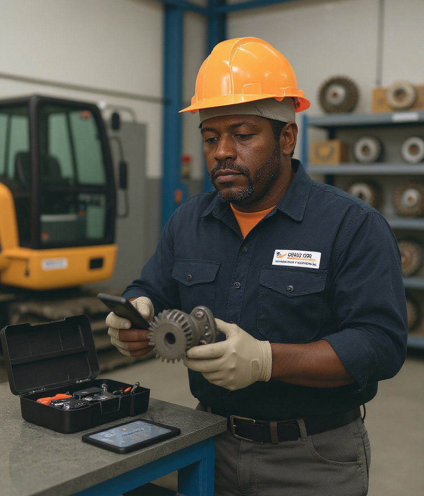

Om företaget
Vi är ett specialiserat företag inom försäljning, konstruktion, tillverkning och service av slutväxlar och planetväxlar för minigrävare och grävmaskiner. Med ett brett produktsortiment som omfattar över 800 olika modeller kan vi erbjuda lösningar för maskiner i viktklasser från 0,8 till 45 ton. Vårt mål är att leverera driftsäkra produkter med hög kvalitet, konkurrenskraftiga priser och korta ledtider, samtidigt som vi erbjuder personlig service och teknisk expertis genom hela kundens köpprocess.
Genom att kombinera egen tillverkning med gedigen branscherfarenhet har vi byggt upp en verksamhet som fokuserar på att göra högkvalitativa växellösningar tillgängliga för både verkstäder, maskinägare, återförsäljare och andra företag inom entreprenadbranschen. Vi strävar efter att vara en långsiktig och pålitlig samarbetspartner som hjälper våra kunder att hålla sina maskiner i drift och minska kostnaderna för underhåll och reparationer.
Nya produkter med hög kvalitet till rätt pris
En central del av vår verksamhet är att erbjuda nya slutväxlar och planetväxlar till konkurrenskraftiga priser. Traditionellt har renovering av befintliga växlar varit ett vanligt alternativ när en maskindel gått sönder. Vi anser dock att det i många fall kan vara både enklare och mer ekonomiskt fördelaktigt att investera i en ny enhet i stället för att renovera den gamla.
Genom att själva tillverka komponenter och hantera distributionen direkt kan vi minska antalet mellanhänder och skapa en effektivare leveranskedja. Det gör det möjligt för oss att erbjuda produkter med hög kvalitet till attraktiva priser. För kunden innebär detta en möjlighet att få en ny slutväxel eller planetväxel utan att behöva kompromissa med kvalitet eller funktion.
En ny växel kan dessutom innebära en mer förutsägbar drift, minskad risk för återkommande fel och enklare planering av maskinens underhåll. Varje kunds situation är unik, och vi hjälper därför gärna till att jämföra olika alternativ utifrån maskinmodell, användningsområde, driftsförhållanden och ekonomiska förutsättningar.
Service, underhåll och teknisk support
Utöver försäljning av nya produkter erbjuder vi service, felsökning, konfiguration och teknisk rådgivning. Vi vet att en stillastående grävmaskin kan medföra betydande kostnader och förseningar. Därför arbetar vi för att identifiera rätt lösning så snabbt och effektivt som möjligt.
Vi kan hjälpa kunder som behöver en utbytesväxel, en specialanpassad lösning eller service av befintlig utrustning. Vår tekniska kompetens omfattar växellösningar från flera etablerade tillverkare, däribland Bonfiglioli, Brevini, Kayaba, Nachi, Oil Motor, Orbit/Eaton, Sumitomo, SOM, Tong Myung, Teijin Seiki och Nabtesco.
Genom att utgå från kundens behov och maskinens tekniska specifikationer kan vi rekommendera en lämplig produkt eller lösning. Vi lägger stor vikt vid att rätt komponent används för rätt applikation, eftersom passform, belastning, utväxling och driftsförhållanden har stor betydelse för produktens livslängd och funktion.

Bild på Bob "Lillen" Mkumba (han gillar sitt jobb).
Egen konstruktion och modern tillverkning
För kunder med särskilda behov erbjuder vi även kundanpassade lösningar. Vår egen konstruktionsavdelning har lång erfarenhet av mekaniska transmissioner och kan hjälpa till att utveckla eller anpassa planetväxlar och slutväxlar för specifika applikationer.
Arbetet kan omfatta teknisk analys, dimensionering, val av material, anpassning av infästningar och utveckling av lösningar för särskilda belastningar eller utrymmeskrav. Genom nära samarbete mellan konstruktion, tillverkning och service kan vi omsätta kundens krav till en praktiskt fungerande produkt.
Tillverkningen sker i våra egna lokaler med moderna maskiner och utrustning som möjliggör noggrann bearbetning och hög repeterbarhet. Våra operatörer har god teknisk kompetens och lång erfarenhet av tillverkningsprocesser. Vi arbetar metodiskt för att säkerställa att komponenterna uppfyller fastställda krav på mått, passform och kvalitet.
Kvalitet är en viktig del av hela produktionskedjan, från materialval och bearbetning till montering och slutkontroll. Genom att kontinuerligt utveckla våra arbetsmetoder vill vi skapa produkter som levererar pålitlig prestanda även under krävande arbetsförhållanden.
Kvalitet, tillgänglighet och kundfokus
Vi vill göra det enkelt för våra kunder att hitta rätt växellösning. Därför kombinerar vi ett brett modellutbud med teknisk rådgivning och möjligheten att ta fram specialanpassade produkter. Vårt arbete utgår från att varje maskin och varje användningsområde kan ställa olika krav på funktion, hållbarhet och prestanda.
Vi strävar efter tydlig kommunikation, pålitliga leveranser och långsiktiga kundrelationer. Genom att lyssna på våra kunders erfarenheter och följa utvecklingen inom entreprenadmaskiner kan vi kontinuerligt förbättra vårt sortiment och våra tjänster.
Vår ambition är att vara en självklar partner för företag och maskinägare som söker kostnadseffektiva, hållbara och tekniskt genomtänkta lösningar för slutväxlar och planetväxlar. Med egen konstruktion, tillverkning och teknisk kompetens erbjuder vi en kombination av flexibilitet, kvalitet och prisvärdhet som skapar värde för våra kunder.